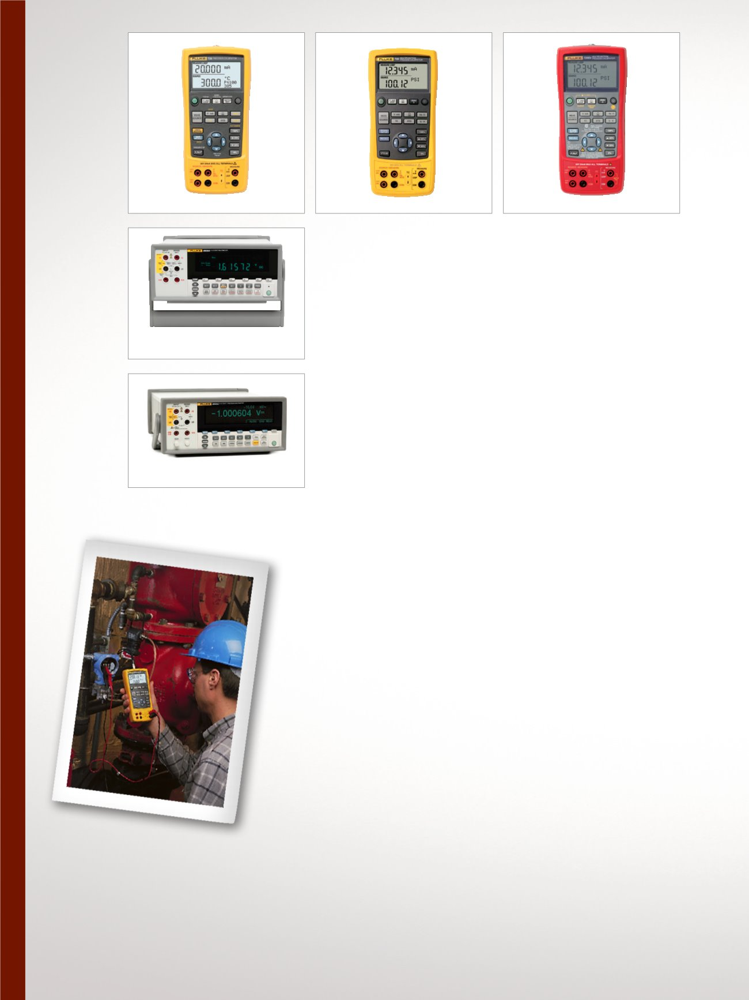

6
Electrical, Multifunction, and mA Loop Calibration
726 Precision Multifunction
Process Calibrator
Designed specifically for the
process industry with broad
workload coverage, calibration
power and unsurpassed accu-
racy. Includes all the features and
functions of the 725 below plus:
•
Enhanced accuracy
•
Pulse count sourcing and pulse
measurement totalizing
•
Pressure switch test
•
Error % calculation
•
NIST traceable calibration
725 Multifunction Process
Calibrator
A powerful and easy-to-use field
calibrator to test and calibrate
almost any process parameter.
•
Measure volts, mA, RTDs,
thermocouples, frequency,
and ohms to test sensors and
transmitters
•
Source/simulate volts, mA, ther-
mocouples, RTDs, frequency,
ohms, and pressure to calibrate
transmitters
•
Measure/source pressure
using any of 29 Fluke 700Pxx
Pressure Modules
•
Source mA with simultaneous
pressure measurement to
conduct valve and I/P tests
•
NIST traceable calibration
725EX IS Multifunction
Process Calibrator
Easy-to-use, intrinsically safe
field calibrator can calibrate
almost any process instrument
needing service where explosive
gasses may be present.
•
ATEX II 1 G Ex ia IIB 171 °C
KEMA 04ATEX 1303X
•
I.S. Class I, Division 1 Groups
B-D, 171 °C compliance
•
Measure Volts dc, mA, RTDs,
thermocouples, frequency and
ohms
•
Source or simulate volts dc, mA,
RTDs, thermocouples, frequency
and ohms
•
Measure/source pressure using
any of eight Fluke 700PEX
Pressure Modules
•
NIST traceable calibration
8808A Digital Multimeter
Versatile multimeter for
manufacturing, development
and service applications.
•
5.5 digit resolution
•
Basic V dc accuracy of 0.015 %
•
Dual display
•
NIST traceable calibration
8845A/8846A Precision
Multimeters
Precision and versatility for bench
or systems applications.
•
6.5 digit resolution
•
Basic V dc accuracy of up to
0.0024 %
•
Dual display
•
/C models include accredited
calibration
725Ex
8808A
8845A/8846A
726
725